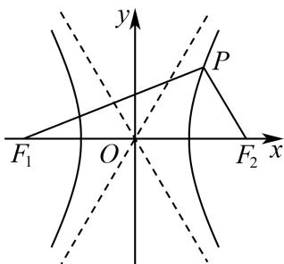
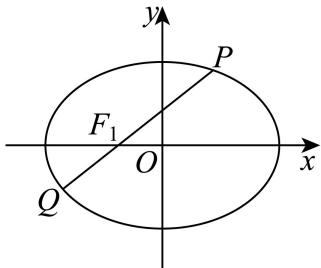
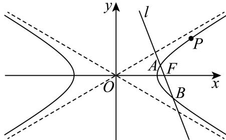
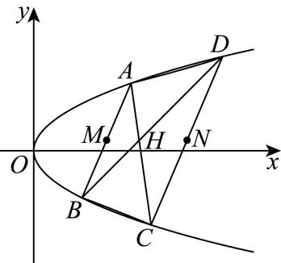
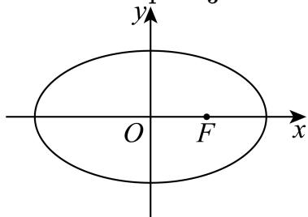
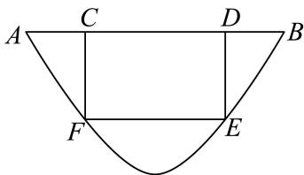

直线、圆与圆锥曲线基本量
根据方程方向和几何定义求斜率、焦点、准线、渐近线及离心率。
嘉定 · 第2题 ★☆☆☆☆ · 教师预估
本题资料或解析有待核事项，预览不可作为已审定成品。
直线3x − y + 1 = 0的倾斜角为 .（用反三角函数表示）
考点：一般式求斜率与倾斜角；反正切表示倾斜角。
难度依据：斜率为正时直接反正切求角
核查说明：题干与解析已用于人工归类，尚未完成整题公式校净与独立数学终审。
展开答案与解析
嘉定 · 第5题 ★☆☆☆☆ · 教师预估
本题资料或解析有待核事项，预览不可作为已审定成品。
已知双曲线C： 3x2−2y2=1 ，则双曲线C的离心率是
考点：双曲线标准方程与离心率。
难度依据：识别实虚半轴后计算离心率
核查说明：题干与解析已用于人工归类，尚未完成整题公式校净与独立数学终审。
展开答案与解析
奉贤 · 第2题 ★☆☆☆☆ · 教师预估
本题资料或解析有待核事项，预览不可作为已审定成品。
若直线l1 : :x+ay−2=0 : ! 与直线l2：ax + y − 2 = 0互相垂直，则a =
考点：一般式直线垂直的系数条件。
难度依据：用系数内积为零避免漏斜率不存在情形
核查说明：题干与解析已用于人工归类，尚未完成整题公式校净与独立数学终审。
展开答案与解析
奉贤 · 第7题 ★★☆☆☆ · 教师预估
本题资料或解析有待核事项，预览不可作为已审定成品。
已知抛物线 x2=ay(a>0) 上有一点P到准线的距离为6，点P到x轴的距离为4，则抛物线的焦点坐标为
考点：抛物线准线距离与焦点参数。
难度依据：先定纵坐标再用准线距离反求参数
核查说明：题干与解析已用于人工归类，尚未完成整题公式校净与独立数学终审。
展开答案与解析
宝山 · 第9题 ★★★☆☆ · 教师预估
本题资料或解析有待核事项，预览不可作为已审定成品。
…
过双曲线 9x2−16y2=1 的左焦点F作圆 x2+y2=9 的切线，切点为M.延长切线交双曲线的右支于点 P，O为坐标原点，点T为线段FP的中点，则|OT| =
考点：双曲线定义与切线几何。
难度依据：涉及双曲线定义与切线几何；难度为教师预估，需结合原题条件复核。
核查说明：原解中参数a的数值前后冲突，线段位置关系亦需回源核验。；依据现有底稿归类，尚未逐页校卷、公式校净或独立数学终审。
展开答案与解析
崇明 · 第5题 ★☆☆☆☆ · 教师预估
双曲线 x2−4y2=1 的渐近线方程是
考点：双曲线渐近线。
难度依据：涉及双曲线渐近线；难度为教师预估，需结合原题条件复核。
核查说明：依据现有底稿归类，尚未逐页校卷、公式校净或独立数学终审。
展开答案与解析
徐汇 · 第10题 ★★★☆☆ · 教师预估
本题资料或解析有待核事项，预览不可作为已审定成品。
已知椭圆 a2x2+b2y2=1(a>b>0) 的左､右焦点分别为 F1,F2 ，P为椭圆上一点，且 ∠PF2F1=3π 若此椭圆的离心率为 3−1 ，则 ∠PF1F2 的大小为
考点：椭圆焦点三角形；正余弦定理。
难度依据：椭圆焦点三角形；正余弦定理；按所需步骤与推理量估计
核查说明：题干与解析已用于人工归类，尚未完成整题公式校净与独立数学终审。
展开答案与解析
徐汇 · 第13题 ★☆☆☆☆ · 教师预估
本题资料或解析有待核事项，预览不可作为已审定成品。
下列抛物线中，焦点坐标为 (0,81) 的是（）
A. y2=21x
B. y2=41x
C. x2=21y
D. x2=41y
考点：抛物线焦点与标准方程。
难度依据：抛物线焦点与标准方程；按所需步骤与推理量估计
核查说明：题干与解析已用于人工归类，尚未完成整题公式校净与独立数学终审。
展开答案与解析
普陀 · 第2题 ★☆☆☆☆ · 教师预估
本题资料或解析有待核事项，预览不可作为已审定成品。
已知某抛物线的准线方程为y＝1，则该抛物线的标准方程为
考点：准线方程反求抛物线标准式。
难度依据：先判断开口方向再确定参数
核查说明：题干与解析已用于人工归类，尚未完成整题公式校净与独立数学终审。
展开答案与解析
普陀 · 第7题 ★☆☆☆☆ · 教师预估
本题资料或解析有待核事项，预览不可作为已审定成品。
设椭圆 C:a2x2+b2y2=1(a>b>0) 的左、右焦点分别为 F1, F2, ，左顶点为A，若椭圆C的离心率为 31 ，则 ∣AF1∣∣F2A∣ 的值为
考点：椭圆顶点焦点距离比与离心率。
难度依据：把线段长度写成a加减c
核查说明：题干与解析已用于人工归类，尚未完成整题公式校净与独立数学终审。
展开答案与解析
杨浦 · 第11题 ★★★☆☆ · 教师预估
本题资料或解析有待核事项，预览不可作为已审定成品。
中国探月工程又称“嫦娥工程”，是中国航天活动的第三个里程碑.在探月过程中，月球探测器需要进行变轨，即从一条椭圆轨道变到另一条不同的椭圆轨道上.若变轨前后的两条椭圆轨道均以月球中心为一个焦点，变轨后椭圆轨道上的点与月球中心的距离最小值保持不变，而距离最大值扩大为变轨前的4倍，椭圆轨道的离心率扩大为变轨前的2.5倍，则变轨前的椭圆轨道的离心率为（精确到0.01）
考点：椭圆焦半径与离心率。
难度依据：椭圆焦半径与离心率；按所需步骤与推理量估计
核查说明：题干与解析已用于人工归类，尚未完成整题公式校净与独立数学终审。
展开答案与解析
浦东 · 第2题 ★☆☆☆☆ · 教师预估
本题资料或解析有待核事项，预览不可作为已审定成品。
直线x − y + 1 = 0的倾斜角 .
考点：直线斜率与倾斜角。
难度依据：直线斜率与倾斜角；按所需步骤与推理量估计
核查说明：题干与解析已用于人工归类，尚未完成整题公式校净与独立数学终审。
展开答案与解析
浦东 · 第9题 ★★★☆☆ · 教师预估
本题资料或解析有待核事项，预览不可作为已审定成品。

已知双曲线 x2−3y2=1 的左、右焦点分别为 F1, F2 ，双曲线上的点P在第一象限，且 PF2 与双曲线的一条渐近线平行，则 △PF1F2 的面积为
考点：双曲线渐近线平行与焦点三角形。
难度依据：双曲线渐近线平行与焦点三角形；按所需步骤与推理量估计
核查说明：题干与解析已用于人工归类，尚未完成整题公式校净与独立数学终审。
展开答案与解析
虹口 · 第10题 ★★★☆☆ · 教师预估
本题资料或解析有待核事项，预览不可作为已审定成品。
双 曲 线 C1:a2x2−b2y2=1 的 左 、 右 焦 点 分 别 为 F1 和 F2 ， 若 以 点 F2 为 焦 点 的 抛 物 线C2:y2=2px(p>0)→^C1 在第一象限交于点P，且 ∠PF1F2=4π ，则 C1 的离心率为
考点：双曲线与抛物线定义、焦点三角形及离心率。
难度依据：需要联系两条圆锥曲线的焦点性质和余弦定理，教师预估。
核查说明：题干连接抛物线与双曲线的文字识别缺损；解析需依照题图回源核对。；依据现有底稿归类，尚未逐页校卷、公式校净或独立数学终审。
展开答案与解析
金山 · 第6题 ★☆☆☆☆ · 教师预估
以C (3, 4)为圆心且过点(1, −3)的圆的标准方程是
考点：圆的标准方程。
难度依据：涉及圆的标准方程；难度为教师预估，需结合原题条件复核。
核查说明：依据现有底稿归类，尚未逐页校卷、公式校净或独立数学终审。
展开答案与解析
金山 · 第15题 ★★★☆☆ · 教师预估
古希腊数学家阿波罗尼奥斯用不同的平面截同一圆锥，得到了圆锥曲线，其中的一种如图所示．用过M点且垂直于圆锥底面的平面截两个全等的对顶圆锥得到双曲线的一部分，已知高 PO=2 ，底面圆的半径为4，M为母线PB的中点，平面与底面的交线 EF⊥AB ，则双曲线的两条渐近线所成角的余弦值为（ ）

A. 65
B. 54
C. 43
D. 53
考点：圆锥截面双曲线渐近线夹角。
难度依据：涉及圆锥截面双曲线渐近线夹角；难度为教师预估，需结合原题条件复核。
核查说明：依据现有底稿归类，尚未逐页校卷、公式校净或独立数学终审。
展开答案与解析

长宁 · 第4题 ★☆☆☆☆ · 教师预估
以C(3,4)为圆心，√3为半径的圆的标准方程是
考点：由圆心半径求方程。
难度依据：圆的标准方程；由圆心半径求方程
展开答案与解析
闵行 · 第3题 ★☆☆☆☆ · 教师预估
本题资料或解析有待核事项，预览不可作为已审定成品。
直线 3x−y+1= 0的倾斜角为
考点：由斜率求直线倾斜角。
难度依据：斜率与倾斜角；由斜率求直线倾斜角
核查说明：源解析倾斜角范围误写为(0,π]，应核原卷；本题答案不受影响。
展开答案与解析
青浦 · 第4题 ★★☆☆☆ · 教师预估
本题资料或解析有待核事项，预览不可作为已审定成品。
已知直线 p1:x+(1+m)y+m−2=0 与直线l :mx+2y+8=0⋅ 平行，则m = .
考点：直线平行参数与重合排除。
难度依据：比例条件会给出重合直线需剔除
核查说明：题干与解析已用于人工归类，尚未完成整题公式校净与独立数学终审。
展开答案与解析
青浦 · 第5题 ★☆☆☆☆ · 教师预估
本题资料或解析有待核事项，预览不可作为已审定成品。
两条渐近线互相垂直的双曲线的离心率为
考点：等轴双曲线渐近线与离心率。
难度依据：垂直渐近线推出两半轴相等
核查说明：题干与解析已用于人工归类，尚未完成整题公式校净与独立数学终审。
展开答案与解析
静安 · 第5题 ★☆☆☆☆ · 教师预估
到点 F1(−3,0),F2(3,0) 距离之和为10的动点P的轨迹方程为
考点：由焦距和距离和求参数。
难度依据：椭圆定义与标准方程；由焦距和距离和求参数
展开答案与解析
静安 · 第9题 ★★☆☆☆ · 教师预估
以双曲线 4x2−my2=1 的离心率为半径，以右焦点为圆心的圆与双曲线的渐近线相切，则m的值为
考点：焦点到渐近线距离等于离心率。
难度依据：双曲线渐近线与圆相切；焦点到渐近线距离等于离心率
展开答案与解析
黄浦 · 第3题 ★☆☆☆☆ · 教师预估
椭圆 4x2+3y2=1 的焦距是
考点：由a²−b²求焦距。
难度依据：椭圆焦距；由a²−b²求焦距
展开答案与解析
焦点弦、交点与定点定值
联立曲线和直线，结合韦达、分点与面积条件；保留完整综合大题。
嘉定 · 第20题 ★★★★☆ · 教师预估
本题资料或解析有待核事项，预览不可作为已审定成品。
在平面直角坐标系 xOy⊞ ，已知椭圆Γ: 5x2+4y2=1,F1,F2 是其左､右焦点，过椭圆Γ右焦点 F2 的直线PQ交椭圆于P,Q两点
(1) (4分)若− PF1⋅PF2=3 ，求点P的坐标；
(2) (6分)若 △F1PQ 的面积为 2140 ，求直线PQ的方程；
(3) (8分)设直线l与椭圆Γ交于A,B两点，M为线段AB的中点.当 kOM⋅kAB=kOA⋅kOB 时，△OA B的面积是否为定值？如果是，请求出这个定值；如果不是，请说明理由.
考点：（1）数量积与椭圆联立求点；（2）韦达定理表示焦点弦面积；（3）点差法和斜率关系证明面积定值。
难度依据：（1）数量积与椭圆联立求点；（2）韦达定理表示焦点弦面积；（3）点差法和斜率关系证明面积定值
核查说明：题干与解析已用于人工归类，尚未完成整题公式校净与独立数学终审。
展开答案与解析

奉贤 · 第20题 ★★★★★ · 教师预估
本题资料或解析有待核事项，预览不可作为已审定成品。

椭圆Γ: a2x2+y2=1(a>1) 的左右焦点分别为 F1,F2 ，设 P(x0,y0) 是第一象限内椭圆上的一点，PF1 的延长线交椭圆于点 Q(x1,y1)

(1) (4分)若椭圆的离心率 22 ，求a的值；
(2) (6分) fa=2,PQ⋅OF1=512 ，求x0；
(3) (8分)若a = 2，过点 T(0,t) 的直线l与椭圆Γ交于M、N两点，且 ∣MN∣=2 ，则当 t≥0H 时，判 断符合要求的直线有几条，说明理由？
考点：（1）离心率定参数；（2）向量约束与焦点弦联立；（3）按参数讨论定长弦数目并补竖直线。
难度依据：（1）离心率定参数；（2）向量约束与焦点弦联立；（3）按参数讨论定长弦数目并补竖直线
核查说明：题干与解析已用于人工归类，尚未完成整题公式校净与独立数学终审。；原解第3问竖直线讨论写成t>0但题设允许t=0，最后汇总包含t=0；须规范边界说明。；题干与解析已用于人工归类，尚未完成整题公式校净与独立数学终审。；原解第3问竖直线讨论写成t>0但题设允许t=0，最后汇总包含t=0；须规范边界说明。
展开答案与解析
宝山 · 第20题 ★★★★☆ · 教师预估
本题资料或解析有待核事项，预览不可作为已审定成品。
…
已知椭圆 ::9x2+3y2=1 : ，直线l经过椭圆Γ的右顶点P且与椭圆交于另一点A，设线段AP的中点为M.

(1) (4分)求椭圆Γ的焦距和离心率；
(2) (6分)若 kOM=−31. ，求直线AP的方程；
(3) (8分)过点P再作一条直线与椭圆Γ交于点B，线段BP的中点为N.若 OM⊥ON ，则直线AB是否经过定点？若经过定点，求出定点坐标；若不经过定点，请说明理由
考点：（1）椭圆离心率；（2）弦中点斜率；（3）向量垂直与定点。
难度依据：涉及（1）椭圆离心率；（2）弦中点斜率；（3）向量垂直与定点；难度为教师预估，需结合原题条件复核。
核查说明：仅修复所列OCR公式及其定界符错位；原解数学疑点和其他可渲染错识未因此消除。；第（3）问舍根及特殊位置须回核。；依据现有底稿归类，尚未逐页校卷、公式校净或独立数学终审。；仅修复所列OCR公式及其定界符错位；原解数学疑点和其他可渲染错识未因此消除。；第（3）问舍根及特殊位置须回核。
展开答案与解析

崇明 · 第20题 ★★★★☆ · 教师预估
本题资料或解析有待核事项，预览不可作为已审定成品。
已知椭圆Γ: 4y2+3x2=1 ，点 F1 、 F2 分别是椭圆的下焦点和上焦点，过点 F2 的直线l与椭圆交于A、B两点
(1) (4分)若直线l平行于x轴，求线段AB的长；
(2) (6分)若点A在y轴左侧，且− F1A⋅F2A=49 ，求直线l的方程；
(3) (8分)已知椭圆上的点C满足 ∣CA∣=∣CB∣ ，是否存在直线l使得△ABC的重心在x轴上？若存在，请求出直线l的方程，若不存在，请说明理由
考点：（1）焦点弦长；（2）数量积求弦；（3）等腰与重心条件。
难度依据：涉及（1）焦点弦长；（2）数量积求弦；（3）等腰与重心条件；难度为教师预估，需结合原题条件复核。
核查说明：原解上焦点坐标及后续分母前后不一致，须回核。；依据现有底稿归类，尚未逐页校卷、公式校净或独立数学终审。
展开答案与解析
徐汇 · 第20题 ★★★★★ · 教师预估
本题资料或解析有待核事项，预览不可作为已审定成品。
已知过点 P(3,2) 的双曲线C的渐近线方程为 x±3y=0 .如图所示，过双曲线C的右焦点F作与 坐标轴都不垂直的直线l交C的右支于A,B两点.

(1) (4分)求双曲线C的标准方程；
(2) (6分)已知点Q (23,0) ，求证： ∠AQF=∠BQF
(3) (8分)若以AB为直径的圆被直线 x=23 截得的劣弧为 MN ，则 MN 所对圆心角的大小是否为定值？若是，求出该定值；若不是，请说明理由.
考点：（1）渐近线及过点确定双曲线；（2）焦点弦与斜率对称；（3）直径圆与定角。
难度依据：双曲线焦点弦与圆心角定值；按所需步骤与推理量估计
核查说明：题干与解析已用于人工归类，尚未完成整题公式校净与独立数学终审。；联立方程及部分长分式有识别损坏，须核原解。；题干与解析已用于人工归类，尚未完成整题公式校净与独立数学终审。；联立方程及部分长分式有识别损坏，须核原解。
展开答案与解析
普陀 · 第20题 ★★★★☆ · 教师预估
本题资料或解析有待核事项，预览不可作为已审定成品。
设 m>0, m>0, F1∖ F2 分别是双曲线Γ: a2x2−y2=1 的左、右焦点，直线 l:x−my−2=0−4 经过 点 F2− 与Γ的右支交于A、B两点，点O是坐标原点.
(1) (4分)若点M是Γ上的一点， ∣MF1∣=2 ，求 ∣MF2 |的值；
(2) (6分)设λ、 μ∈R: ，点P在直线 z˙x=6. 上，若点O、A、P、B满足： OA=λBP,OB=μAP 求点P的坐标；
(3) (8分)设AO的延长线与Γ交于G点，若向量− 与 OB 满足： OA⋅OB≥17 ，求 △GAB 的面积S 的取值范围.
考点：（1）由焦点和定义求距离；（2）向量关系转平行四边形与中点；（3）数量积限定参数后求三角形面积范围。
难度依据：（1）由焦点和定义求距离；（2）向量关系转平行四边形与中点；（3）数量积限定参数后求三角形面积范围
核查说明：题干与解析已用于人工归类，尚未完成整题公式校净与独立数学终审。；题干a>0误写为重复m>0，部分向量标签残缺，需视觉回源。；题干与解析已用于人工归类，尚未完成整题公式校净与独立数学终审。；题干a>0误写为重复m>0，部分向量标签残缺，需视觉回源。
展开答案与解析
杨浦 · 第20题 ★★★★★ · 教师预估
本题资料或解析有待核事项，预览不可作为已审定成品。
如图所示，已知抛物线Γ: y2=x: ，点A､B､C､D是抛物线上的四个点，其中A､D在第一象限，B､C在第四象限，满足 AB//CD ，线段 AC⩞EBD 交于点H.记线段AB与CD的中点分别为M､N.

(1) (4分)求拋物线Γ的焦点坐标；
(2) (6分)求证：点M､H､N三点共线；
(3) (8分)若2 ∣HM∣=∣HN∣=2 ，求四边形ABCD的面积.
考点：（1）抛物线焦点；（2）平行弦与交点共线；（3）长度条件及四边形面积。
难度依据：需联立平行弦和交点条件，证明共线并处理面积约束。
核查说明：题干与解析已用于人工归类，尚未完成整题公式校净与独立数学终审。；第（3）问长度关系2|HM|=|HN|=2须核原卷。；题干与解析已用于人工归类，尚未完成整题公式校净与独立数学终审。；第（3）问长度关系2|HM|=|HN|=2须核原卷。
展开答案与解析
松江 · 第20题 ★★★★★ · 教师预估
本题资料或解析有待核事项，预览不可作为已审定成品。
如果一条双曲线的实轴和虚轴分别是一个椭圆的长轴和短轴，则称它们为“共轴”曲线．若双曲线 C1 与椭圆 C2 是“共轴”曲线，且椭圆 C2:9x2+b2y2=1(0<b<3) e1e2=945(e1 、 e2 分别为曲线 ℘ 、 C2 的离心率）．已知点M(1,0)，点P为双曲线 C1 上任意一点
(1) (4分)求双曲线 C1 的方程；
(2) (6分)延长线段PM到点Q，且 ∣PM∣=2∣MQ∣ ，若点Q在椭圆 C2 上，试求点P的坐标；
(3) (8分)若点P在双曲线 C1 的右支上，点A、B分别为双曲线 C1 的左、右顶点，直线PM交双曲线的左支于点R，直线AP、BR的斜率分别为 ιAP∖ kBR ．是否存在实数λ，使得 kAP=λkBR? 若存在，求出λ的值；若不存在，请说明理由
考点：（1）离心率积确定共轴曲线；（2）分点坐标与交点；（3）顶点相关斜率比例。
难度依据：需识别共轴关系、设分点并通过参数与韦达关系证明斜率比例。
核查说明：题干与解析已用于人工归类，尚未完成整题公式校净与独立数学终审。；共轴关系的符号与下标有误识，需回源。；题干与解析已用于人工归类，尚未完成整题公式校净与独立数学终审。；共轴关系的符号与下标有误识，需回源。
展开答案与解析

浦东 · 第20题 ★★★★☆ · 教师预估
本题资料或解析有待核事项，预览不可作为已审定成品。
已知椭圆 8x2+4y2=1 的左、右焦点分别为 F1, F2 ，过坐标原点的直线交椭圆于A、B两点，点A在第一象限

(1) (4分)若 ∣OA∣=6. ，求点A的坐标；
(2) (6分)求− AF1+3AF2 的取值范围；
(3) (8分)若 AE⊥x 轴，垂足为 E, ，连结BE并延长交椭圆于点 C, ，求 △ABCH 积的最大值
考点：（1）椭圆与距离条件求点；（2）焦点向量模的取值范围；（3）椭圆弦与三角形面积最值。
难度依据：椭圆参数向量模与三角形面积；焦点向量模；按所需步骤与推理量估计
核查说明：题干与解析已用于人工归类，尚未完成整题公式校净与独立数学终审。；第（2）问向量模符号丢失，须回源。；题干与解析已用于人工归类，尚未完成整题公式校净与独立数学终审。；第（2）问向量模符号丢失，须回源。
展开答案与解析

虹口 · 第20题 ★★★★☆ · 教师预估
本题资料或解析有待核事项，预览不可作为已审定成品。
已知椭圆Γ: 4x2+y2=1 1的左、右焦点分别为 F1,F2 ，右顶点为A，上顶点为B，设P为Γ上的一点(1) (4分)当 PF1⊥F1F2 时，求 ∣PF2 |的值；
(2) (6分)若P点坐标为 (1,23) ，则在Γ上是否存在点Q使 △APQ 的面积为 23+1 ，若存在，请求出所有满足条件的点Q的坐标；若不存在，请说明理由；
(3) (8分)已知D点坐标为(0,m)，过点P和点D的直线l与椭圆Γ交于另一点T，当直线l与x轴和y轴 均不平行时，有 PT⋅(BP+BT)=0 ，求实数m的取值范围
考点：（1）椭圆焦点；（2）定面积与交点；（3）数量积与中点参数范围。
难度依据：涉及（1）椭圆焦点；（2）定面积与交点；（3）数量积与中点参数范围；难度为教师预估，需结合原题条件复核。
核查说明：第（2）问平行线距离公式中的符号与随后解出的q不一致，须回源核对。；依据现有底稿归类，尚未逐页校卷、公式校净或独立数学终审。
展开答案与解析
金山 · 第20题 ★★★★☆ · 教师预估
本题资料或解析有待核事项，预览不可作为已审定成品。
已知椭圆 Γ1:4x2+3y2=1 ，抛物线 Γ2:y2=2px(p>0) 与 Γ1 有一个相同的焦点F．过点F作互相垂直的两条直线l与l′，直线 ∣E∣Γ1 交于点A、 B, ，直线l′与 Γ2 交于点C、D
(1) (4分)求椭圆 Γ1 的离心率及抛物线 Γ2 的方程；
(2) (6分)若直线l的倾斜角为 43π ，求AB中点M的坐标；
(3) (8分)四边形ACBD的面积是否存在最小值，若存在，求出最小值；若不存在，请说明理由
考点：（1）椭圆与抛物线参数；（2）焦点弦中点；（3）垂直焦点弦所成面积最小值。
难度依据：涉及（1）椭圆与抛物线参数；（2）焦点弦中点；（3）垂直焦点弦所成面积最小值；难度为教师预估，需结合原题条件复核。
核查说明：仅修复所列OCR公式及其定界符错位；原解数学疑点和其他可渲染错识未因此消除。；第（3）问中间不等式公式识别严重损坏，应回源核验。；依据现有底稿归类，尚未逐页校卷、公式校净或独立数学终审。；仅修复所列OCR公式及其定界符错位；原解数学疑点和其他可渲染错识未因此消除。；第（3）问中间不等式公式识别严重损坏，应回源核验。
展开答案与解析

长宁 · 第20题 ★★★★★ · 教师预估
本题资料或解析有待核事项，预览不可作为已审定成品。
已知椭圆的左、右焦点分别为 F1(−1,0),F2(1,0) ，且经过点 P(−1,23)

(1) (4分)求该椭圆的离心率；
(2) (6分)点Q为椭圆上一点，且位于第三象限，若 △PQF2 的面积为3，求点Q的坐标；
(3) (8分)A，B，C，D是椭圆上不重合的四个点，AB与CD相交于点F1，且− F1 AB⟶.CD⟶=0 ，求 ∣AB∣+∣CD∣ 的取值范围
考点：（1）求椭圆离心率；（2）面积条件求点；（3）垂直焦点弦长度和范围。
难度依据：椭圆方程、面积及垂直焦点弦；（1）求椭圆离心率；（2）面积条件求点；（3）垂直焦点弦长度和范围
核查说明：源解析第（2）问公式大段缺失，第（3）问弦长表达式破损，须回原卷核对。
展开答案与解析
闵行 · 第20题 ★★★★★ · 教师预估
已知圆 O:x2+y2=1 ，双曲线Γ: x2−b2y2=1 ，直线l: y=kx+b ，其中 X∈R,b>0
(1) (4分)当b = 2时，求双曲线Γ的离心率；
(2) (6分)若l与圆O相切，证明：l与双曲线Γ的左右两支各有一个公共点；
(3) (8分)设l与y轴交于点P，与圆O交于点A、B，与双曲线Γ的左右两支分别交于点C、D，四个点从左至右依次为C、A、B、D．当 k=22 时，是否存在实数b，使得 PA⋅PC=PB⋅PD∣ 成立？若存在，求出b的值；若不存在，说明理由
考点：（1）求离心率；（2）联立及根的符号证明交两支；（3）韦达定理与数量积求参数。
难度依据：直线与圆、双曲线交点关系；（1）求离心率；（2）联立及根的符号证明交两支；（3）韦达定理与数量积求参数
展开答案与解析
青浦 · 第20题 ★★★★☆ · 教师预估
本题资料或解析有待核事项，预览不可作为已审定成品。
已知椭圆 C:4x2+3y2=1,F 为椭圆 C的右焦点，过点F的直线 l交椭圆 C于A、B两点.

(1) (4分)若直线 l垂直于 x轴，求椭圆 C的弦AB的长度；
(2) (6分)设点P (−3, 0)，当 ∠PAB=90∘ 时，求点A的坐标；
(3) (8分)设点M (3, 0)，记 MA 、 MB的斜率分别为 ∣k1 和 k2 ，求 k1+k2 的取值范围.
考点：（1）竖直焦点弦长；（2）直角几何结合焦点定义求点；（3）韦达化斜率和再求范围。
难度依据：（1）竖直焦点弦长；（2）直角几何结合焦点定义求点；（3）韦达化斜率和再求范围
核查说明：题干与解析已用于人工归类，尚未完成整题公式校净与独立数学终审。；原解第1问把c=√(a²−b²)代入写成√(4²−3²)=1，且第3问联立系数有漏4，须校净复算。；题干与解析已用于人工归类，尚未完成整题公式校净与独立数学终审。；原解第1问把c=√(a²−b²)代入写成√(4²−3²)=1，且第3问联立系数有漏4，须校净复算。
展开答案与解析
黄浦 · 第20题 ★★★★★ · 教师预估
本题资料或解析有待核事项，预览不可作为已审定成品。
双曲线Γ: a2x2−b2y2=1(a>0,b>0) 的左、右焦点分别为 F1(−c,0),F2(c,0)(c>0) ），过点 F1 的直线l与Γ右支在x轴上方交于点A
(1) (4分)若 a=5, ，点A的坐标为(3,4)，求c的值；
(2) (6分)若 AF2⊥F1F2 ，且 .a,b,c 是等比数列，求证：直线l的斜率为定值；
(3) (8分)设直线l与Γ左支的交点为B， c=3 ，当且仅当a满足什么条件时，存在直线l，使得∣AB∣=∣AF2∣ 成立
考点：（1）代点求焦距；（2）等比条件求定斜率；（3）焦点定义与三角形条件求参数。
难度依据：双曲线焦点弦与存在性；（1）代点求焦距；（2）等比条件求定斜率；（3）焦点定义与三角形条件求参数
核查说明：第（3）问源解推导中位置关系与充要性需要独立复核。
展开答案与解析

轨迹交集、构形与计数
把函数变换、等距及面积约束译为几何轨迹；宝山16利用固定底边与两边差不变识别双曲线，再以两边和递增研究高度及面积。检验交点存在性及构形计数。
宝山 · 第16题 ★★★★☆ · 教师预估
本题资料或解析有待核事项，预览不可作为已审定成品。
…
设 △AnBnCn 的三边长分别为 an,bn,cn ，面积为 Sn （n为正整数）．若 b1−c1=21a1 ，其中c1>41a1,an+1=an,bn+1=cn+41an,cn+1=bn+41an ，则（ ）
A. {Sn} 为严格减数列
B. {Sn} 为严格增数列
C. {S2n−1} }为严格增数列， {S2n} 为严格减数列
D. {S2n−1} 为严格减数列， {S2n} 为严格增数列
考点：边长递推与双曲线轨迹。
难度依据：涉及边长递推与双曲线轨迹；难度为教师预估，需结合原题条件复核。
核查说明：轨迹完整性与面积单调的原证明不充分，须数学复核。；依据现有底稿归类，尚未逐页校卷、公式校净或独立数学终审。；初次仅从题干抽核误报专题归属存疑，现已撤销。父端复核并再次读取完整源解析确认：a_n固定、|b_n-c_n|=a_1/2使三角形顶点位于以B,C为焦点的双曲线，b_n+c_n等差递增对应高度及面积递增。保留解析几何归属及本组，作为数列与双曲线定义的跨专题案例。
展开答案与解析

杨浦 · 第12题 ★★★★★ · 教师预估
本题资料或解析有待核事项，预览不可作为已审定成品。
已知实数 a>0，i 是虚数单位，设集合 A={z∣z=w+w1, ∣w∣>1, w∈C, z∈C}，集合 B={z∣∣z−1+i∣=a, z∈C}。如果 B⊆A，则 a 的取值范围为______。
考点：复变换与几何轨迹；圆与实轴线段相离；集合包含。
难度依据：需确定复变换值域并将包含问题转为圆与线段的位置关系；长解细节待审。
核查说明：原MD漏失A的定义及a>0条件；从同名PDF文字层恢复完整题干。PDF第4页底部印刷裁切，A定义未完整可见，不能称已全题视觉确认。；题干与解析已用于人工归类，尚未完成整题公式校净与独立数学终审。；解法二纯虚数分支对q<0的构造及负实数分支符号存在问题，需审解；结论不据此改写。；原MD漏失A的定义及a>0条件；从同名PDF文字层恢复完整题干。PDF第4页底部印刷裁切，A定义未完整可见，不能称已全题视觉确认。；题干与解析已用于人工归类，尚未完成整题公式校净与独立数学终审。；解法二纯虚数分支对q<0的构造及负实数分支符号存在问题，需审解；结论不据此改写。
展开答案与解析
长宁 · 第11题 ★★★☆☆ · 教师预估
设O为坐标原点，从集合{1,2,3,4,5,6,7,8,9}中任取两个不同的元素x、y，组成A、B两点的坐标(x,y),(y,x) ，则 S△AOB≤ 10的概率为
考点：化面积约束为整数对不等式并枚举。
难度依据：坐标面积与古典概型；化面积约束为整数对不等式并枚举
展开答案与解析
闵行 · 第10题 ★★★☆☆ · 教师预估
本题资料或解析有待核事项，预览不可作为已审定成品。
已知 F1,F2 分别为椭圆 4x2+2y2=1 的左、右焦点，过 F1 的直线交椭圆于A、B两点．若 AF1⋅AF2=0 ，则 AF2⋅BF2
考点：由垂直定位短轴顶点并计算数量积。
难度依据：椭圆焦点与向量垂直；由垂直定位短轴顶点并计算数量积
核查说明：仅修复所列OCR公式及其定界符错位；原解数学疑点和其他可渲染错识未因此消除。
展开答案与解析
距离、投影与几何最值
利用圆、圆弧和函数模型研究距离或投影的范围与最值。
嘉定 · 第12题 ★★★★☆ · 教师预估
本题资料或解析有待核事项，预览不可作为已审定成品。
已知实数 [x1,x2,y1,y2 满足： x12+y12=1,x22+y22=1,x1x2+y1y2=21 ，则2∣x1+y1−1∣+2∣x2+y2−1∣ 的最小值为
考点：点线距离和与单位圆弦的几何转化；数量积确定圆心角；定角弦及投影的距离最值。
难度依据：绝对值转点线距离并区分两点位于直线同异侧
核查说明：题干与解析已用于人工归类，尚未完成整题公式校净与独立数学终审。；原解几处角区间及同侧讨论有乱码，完整分类不等于已核证明。；题干与解析已用于人工归类，尚未完成整题公式校净与独立数学终审。；原解几处角区间及同侧讨论有乱码，完整分类不等于已核证明。
展开答案与解析

普陀 · 第10题 ★★★★☆ · 教师预估
本题资料或解析有待核事项，预览不可作为已审定成品。
设平面上四点P、Q、M、N满足： ∣PM∣=∣PN∣=4,∣PQ∣=2 ，若 QM⟶⋅QN⟶=0 ，则 ∣MN∣ |的最小值为
考点：数量积零转直角圆周关系；双圆约束中的弦长最值。
难度依据：将垂直条件转圆再用距离约束确定最短弦
核查说明：题干与解析已用于人工归类，尚未完成整题公式校净与独立数学终审。；原解将r²=8−2√7舍去却随后取其为最小值，又出现r>4的不可能分支；结论不能替代证明，须重核。；题干与解析已用于人工归类，尚未完成整题公式校净与独立数学终审。；原解将r²=8−2√7舍去却随后取其为最小值，又出现r>4的不可能分支；结论不能替代证明，须重核。
展开答案与解析
普陀 · 第11题 ★★★☆☆ · 教师预估
本题资料或解析有待核事项，预览不可作为已审定成品。
设t ∈ R，直线l: x+y−t=0÷ 与曲线 C1:y=41x2(0≤x≤4) )和曲线 C2:y=2x21 分别交于P、Q两 点，则|PQ|的最大值是
考点：反函数图像对称与参数最值；垂直对称轴的截线长度。
难度依据：借互逆曲线对称性降为点到对称轴的距离
核查说明：题干与解析已用于人工归类，尚未完成整题公式校净与独立数学终审。；原解联立方程中常数和换元后的常数有错识，须重排并复算。；题干与解析已用于人工归类，尚未完成整题公式校净与独立数学终审。；原解联立方程中常数和换元后的常数有错识，须重排并复算。
展开答案与解析

松江 · 第10题 ★★★★☆ · 教师预估
本题资料或解析有待核事项，预览不可作为已审定成品。
已知点P为椭圆 4x2+3y2=1 上任意一点，EF为圆 N:(x−1)2+y2=4 的任意一条直径，则 PE⋅PF 的取值范围是
考点：数量积转距离平方；椭圆与焦点距离最值。
难度依据：数量积转距离平方；椭圆与焦点距离最值；按所需步骤与推理量估计
核查说明：题干与解析已用于人工归类，尚未完成整题公式校净与独立数学终审。；解析中向量数量积与夹角余弦的符号步骤不一致，需审校。；题干与解析已用于人工归类，尚未完成整题公式校净与独立数学终审。；解析中向量数量积与夹角余弦的符号步骤不一致，需审校。
展开答案与解析

浦东 · 第10题 ★★★★☆ · 教师预估
本题资料或解析有待核事项，预览不可作为已审定成品。
某地要建造一个市民休闲公园长方形ABCD，如图，边 AB=2km ，边 AD=1km ，其中区域ADE开挖成一个人工湖，其他区域为绿化风景区．经测算，人工湖在公园内的边界是一段圆弧，且A、D位于圆心O的正北方向，E位于圆心O的北偏东 Δ60∘ 方向．拟定在圆弧P处修建一座渔人码头，供游客湖中泛舟，并在公园的边DC、CB开设两个门M、N，修建步行道PM、PN通往渔人码头，且PM⊥CD、PN⊥CB，则步行道PM、PN长度之和的最小值是 km．（精确到0.001）

考点：圆弧距离和与辅助角最值；圆弧建模。
难度依据：圆弧距离和与辅助角最值；圆弧建模；按所需步骤与推理量估计
核查说明：题干与解析已用于人工归类，尚未完成整题公式校净与独立数学终审。
展开答案与解析
金山 · 第12题 ★★★★☆ · 教师预估
本题资料或解析有待核事项，预览不可作为已审定成品。
已知 O 为坐标原点，向量 OA,OB 满足 ∣OA∣+∣OB∣=8，将 OA 绕点 O 按逆时针方向旋转 90∘，得到向量 OC。若 OB+OC=(−3,3)，i=(1,0)，则 (OA+OB)⋅i 的最大值为______。
考点：旋转坐标、椭圆轨迹与投影最值。
难度依据：涉及旋转坐标、椭圆轨迹与投影最值；难度为教师预估，需结合原题条件复核。
核查说明：题干向量与模长条件识别不清，原解参数亦有冲突，须回源。；依据现有底稿归类，尚未逐页校卷、公式校净或独立数学终审。
展开答案与解析
青浦 · 第12题 ★★★★☆ · 教师预估
本题资料或解析有待核事项，预览不可作为已审定成品。
已知A,B,C是单位圆上任意不同三点，则 ABAB⋅AC 的取值范围是
考点：数量积除模转化为有向投影；单位圆上三点的投影范围。
难度依据：利用圆上投影上下界且审查互异点下端点可达性
核查说明：仅修复所列OCR公式及其定界符错位；原解数学疑点和其他可渲染错识未因此消除。；原解析保留在源字段及精确补丁old中；本题针对性纠错已独立复核，不外推为全卷数学终审。；题干与解析已用于人工归类，尚未完成整题公式校净与独立数学终审。；原解取AB=2x后写0<x<1，漏了AB为直径时x=1情形；最终范围仍需补充该情形与端点不可达证明。；仅修复所列OCR公式及其定界符错位；原解数学疑点和其他可渲染错识未因此消除。；原解析保留在源字段及精确补丁old中；本题针对性纠错已独立复核，不外推为全卷数学终审。；题干与解析已用于人工归类，尚未完成整题公式校净与独立数学终审。；原解取AB=2x后写0<x<1，漏了AB为直径时x=1情形；最终范围仍需补充该情形与端点不可达证明。
展开答案与解析
静安 · 第20题 ★★★★☆ · 教师预估
如图的封闭图形的边缘由抛物线Γ和垂直于拋物线对称轴的线段AB组成.已知 ∣AB=4 ，拋物线的顶 点到线段AB所在直线的距离为2.

(1) (4分)请用数学符号语言表达这个封闭图形的边缘；
(2) (6分)在该封闭图形上截取一个矩形CDEF，其中点C､D在线段AB上，点E､F抛物线Γ上.求以矩形CDEF为侧面，CF为母线的圆柱的体积最大值；
(3) (8分)求证：抛物线Γ的任何两条相互垂直的切线的交点都在同一条直线上.
考点：（1）建立图形方程；（2）圆柱体积最值；（3）垂直切线交点轨迹。
难度依据：抛物线模型与切线；（1）建立图形方程；（2）圆柱体积最值；（3）垂直切线交点轨迹
展开答案与解析

黄浦 · 第10题 ★★★☆☆ · 教师预估
i为虚数单位，若复数 z1 满足 ∣z1−1+i∣≤2 ，复数 z2 满足 ∣z2∣=∣z2+1−i∣ ，则 ∣z1−z2∣ |的最小值 为
考点：转化圆面到直线距离。
难度依据：复数轨迹间最短距离；转化圆面到直线距离
展开答案与解析
黄浦 · 第11题 ★★★☆☆ · 教师预估
一个机器零件的形状是有缺口的圆形铁片，如图中实线部分为裁剪后的形状．已知这个圆的半径是13cm， AB=8cm ， BC=6cm ，且 AB⊥BC ，则圆心到点B的距离约为 cm．（结果精确到0.1cm）

考点：三角恒等变换与余弦定理求长度。
难度依据：圆内几何测距；三角恒等变换与余弦定理求长度
展开答案与解析